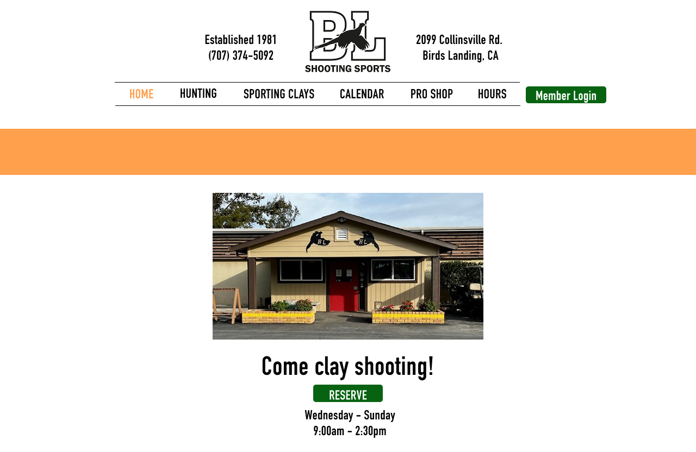
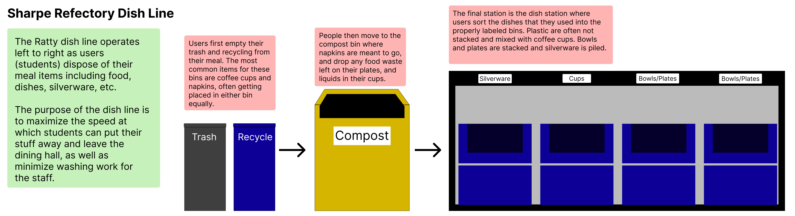
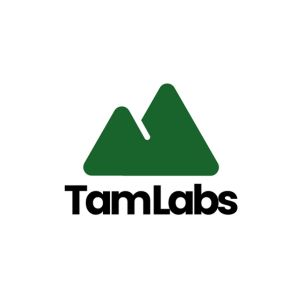
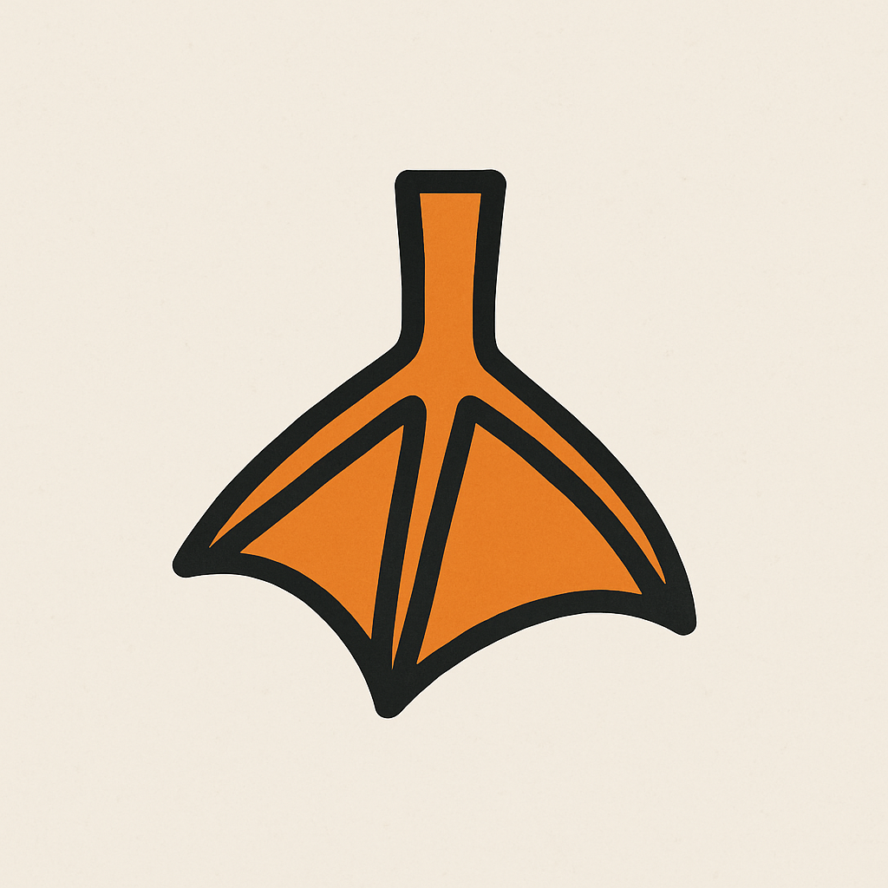

My Projects
Here are some of my recent UI/UX case studies and projects. Click on each card to view the full project.

Responsive Redesign
A comprehensive redesign project focused on improving the responsiveness and user experience of a website across various devices and screen sizes.
View Project
Public Interfaces
An exploration of interface design for public-facing applications, focusing on usability, accessibility, and user engagement in shared spaces.
View Project
Iterative Design
Redesigning an existing software to satisfy accesibility, intuitivness, and aesthetics.
View Project
QuackLog
An (unfinished) innovative project combining user experience design with data visualization to create an intuitive logging platform for duck hunters.
View Project